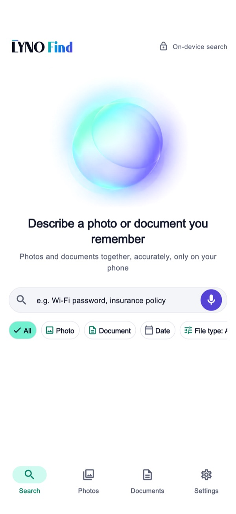

Get the most out of LYNO Find
LYNO Find finds the photos and documents on your phone by words: what a photo shows, the text in it and what documents say. Everything is analyzed and searched on your phone only. This guide follows the app's own guide, with the real app screens.
